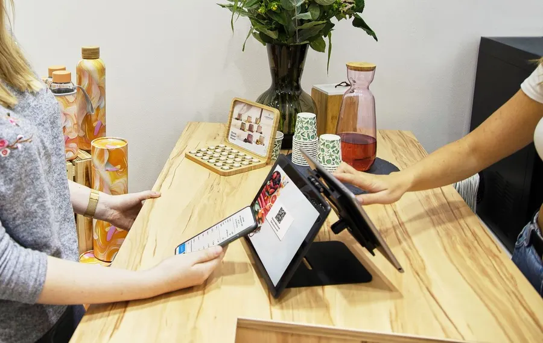

Automação
Automação para estabelecimentos
Projetos para reduzir tarefas repetitivas, organizar rotinas e dar mais previsibilidade à operação.
- Mapeamento da rotina atual
- Definição do que faz sentido automatizar
- Implantação acompanhada

Serviços para a operação comercial
Automação e prestação de serviços para estabelecimentos comerciais que precisam operar com mais organização, previsibilidade e eficiência.
Diagnóstico antes da proposta.
O que fazemos
Automação para organizar processos e prestação de serviços para manter a operação funcionando. O escopo de cada frente é definido a partir do diagnóstico.

Automação
Projetos para reduzir tarefas repetitivas, organizar rotinas e dar mais previsibilidade à operação.
Serviços
Serviços executados com padrão e acompanhamento para manter a operação do estabelecimento funcionando.
Próximo passo
Comece pelo diagnóstico da sua operação. A partir dele, a SIDAD apresenta o escopo e os próximos passos.